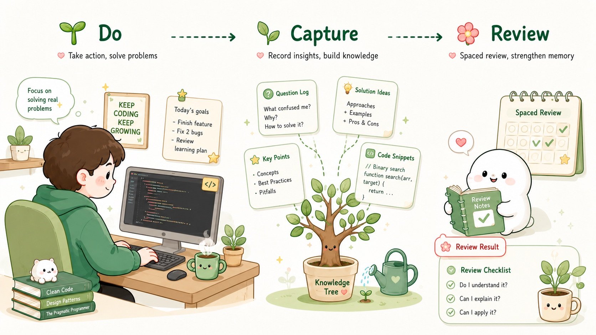
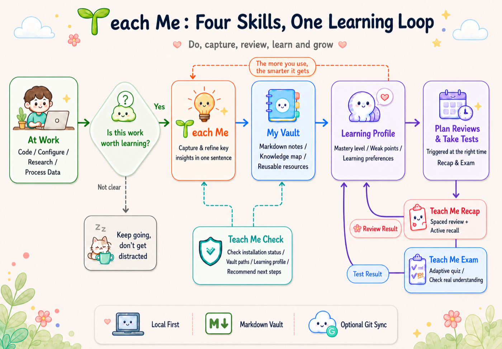

No extra courses needed
The project, dataset, or configuration you are working on right now is the curriculum. Teach Me surfaces the concepts and reasoning when it matters.
Learn by doing, with your tools
You already use AI to code, research, and solve problems. But often the task gets done while the valuable insight slips away. Teach Me captures the key concepts, pitfalls, and tradeoffs from your work and turns them into a local knowledge base — then reminds you to review them at the right time.
Works with Claude Code, Codex, Kimi Code CLI, and OpenClaw. Your notes stay local. Git sync is optional.

Treat the continuous building of your own mind as the one task that matters in this life.— Li Xiaolai, The Truth About Focus
Why
Getting something to work and actually learning it are different. Teach Me helps you keep the key moments from your daily work and slowly turn them into knowledge you can reuse.
The project, dataset, or configuration you are working on right now is the curriculum. Teach Me surfaces the concepts and reasoning when it matters.
It does not save every step. It keeps 1-3 transferable items: hidden mechanisms, decision rationales, reusable reasoning, and future risks.
It watches in the background and only asks for a review at phase boundaries when the signal is strong. Otherwise, you keep working.
It tracks what you know, where you are fuzzy, and how you like explanations. Over time, teaching and reviews fit you better.
Teach Me Recap uses spaced repetition and active recall to turn “I understood it then” into “I can use it later.”
All notes are plain Markdown stored locally. Git sync is optional and disabled by default.
Try it
This isn't a mockup. On the left is a note Teach Me actually writes to your vault after a review; on the right is the kind of multiple-choice question Teach Me Exam generates — click an answer and see for yourself.
Core idea
Page-level edits like delete/reorder/crop can't give the Qt main view a natural undo/apply/save state if the PyMuPDF backend only writes a new file.
Why it matters
Writing a new PDF directly makes the file jump under the user. Returning an intent lets you preview in place first, then Apply to save.
How
Teach Me does not replace the AI tool you already use. It acts like a tutor who knows when to pause: observe first, then decide whether to explain.
Skills
Not one bloated tool, but four small skills that work together.

Core skill. Collects evidence while you work, triggers reviews at phase boundaries, writes high-value knowledge to the local vault, and updates your learner portrait.
Diagnostic skill. Checks installation status, vault location, learner portrait, users, and style, then suggests next steps in natural language.
Review skill. Uses spaced repetition and active recall to help you review captured concepts so you do not forget them.
Quiz skill. Generates adaptive quizzes and tests from your learner portrait to find what you truly understand and what still needs work.
Details
Teach Me connects through each agent's hook mechanism. It only appends its own configuration and never overwrites yours. Installation and uninstallation are reversible.
| Platform | Registration | Events | Teach Me behavior |
|---|---|---|---|
| Claude Code | ~/.claude/settings.json |
UserPromptSubmit, PreToolUse, PostToolUse, Stop |
Injects context for explicit learning or work prompts, scores tool evidence, and may request one short review at Stop. |
| Codex | ~/.codex/config.toml |
UserPromptSubmit, PreToolUse, PostToolUse, Stop |
Enables [features] hooks = true, appends Teach Me hook blocks, and adds ~/.teach_me_skill as a writable root. |
| Kimi Code CLI | ~/.kimi/config.toml |
UserPromptSubmit, tool events, Stop |
Reuses the shared ~/.agents/skills/teach-me path, records evidence, and triggers reviews through supported hook events. |
| OpenClaw | ~/.openclaw/hooks/teach-me-learning |
message:received, agent:bootstrap |
Records whether the session is development-learning work, then appends Teach Me context to bootstrap files. True final-review behavior needs plugin support. |
Hooks do not teach directly. They provide context and evidence. The agent still decides at the phase boundary whether anything deserves a durable note.
Install
Paste the prompt below into your AI tool and it will clone, install, and register hooks automatically. Or run install.sh manually.
Send this to Claude Code, Codex, Kimi Code CLI, or OpenClaw.
Please install the Teach Me Agent Skill (this installs Teach Me, Teach Me Check, Teach Me Recap, and Teach Me Exam):
1. Clone https://github.com/dull-bird/teach-me-skill.git
2. Enter teach-me-skill and run ./install.sh (only copy skill files; do not install extra dependencies or test tools)
3. If I use Claude Code, run ./claude-code/install-hook.sh
4. If I use Codex, run ./codex/install-hook.sh
5. If I use Kimi Code CLI, run ./kimi/install-hook.sh
6. If I use OpenClaw, run ./openclaw/install-hook.sh
7. After installation, run:
python3 ~/.codex/skills/teach-me/scripts/teach_me.py context
or the scripts/teach_me.py context command under the matching agent skills directory
8. Later, check status any time with:
python3 ~/.codex/skills/check/scripts/check_me.py report
9. To review captured knowledge, say "Help me review" and the agent will run:
python3 ~/.codex/skills/recap/scripts/recap.py next
10. To quiz yourself, say "Quiz me" and the agent will run:
python3 ~/.codex/skills/exam/scripts/exam.py plan --time 15
11. Before writing the first learning note, ask me to confirm the vault path, note language, and whether to enable Git syncgit clone https://github.com/dull-bird/teach-me-skill.git
cd teach-me-skill
./install.sh
# Optional hooks
./claude-code/install-hook.sh
./codex/install-hook.sh
./openclaw/install-hook.sh
./kimi/install-hook.shThe default vault is ~/.teach_me_skill/vault. No need to memorize commands — just copy one of these prompts and send it to your agent.
Initialize Teach Me for me, language auto.
Use a custom vault path:
Put my Teach Me vault in ~/Documents/Teach-Me-Vault.
Sync across devices:
Enable Git sync with remote git@github.com:user/teach-me-vault.git and auto-sync after writes.Import
A book, a PDF, a web page, a Word doc, an EPUB, or an entire Obsidian vault — Teach Me can absorb any of them. It reads through the material first, asks how familiar you already are, then decides whether to file it away briefly or quiz you on it right away. Import is a one-time knowledge injection — the source file and your Teach Me vault stay independent afterward.
Import my Obsidian vault: /path/to/obsidian/vault
Import this book for me: /path/to/file.pdf
Add this page to my knowledge base: https://example.com/articleJust say it to your agent — no commands or script flags to remember.
Vault
Readable notes live in visible folders. Machine state lives in .teach-me/. Nothing syncs to a remote unless you explicitly enable Git sync.
vault/
├── 00_Index.md
├── 01_Knowledge_Graph.md
├── 02_Concepts/
├── 03_Algorithmic_Ideas/
├── 04_Project_Maps/
├── 05_Socratic_Questions/
├── 06_Reviews/
├── 07_Learning_Profile/
│ └── Knowledge_Tree.md
└── .teach-me/
├── learning-state.json
├── style-profile.json
└── events.jsonl